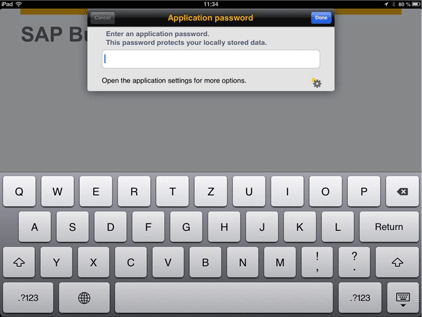
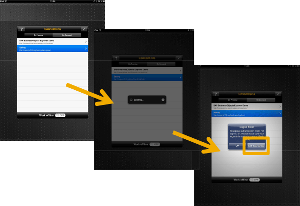
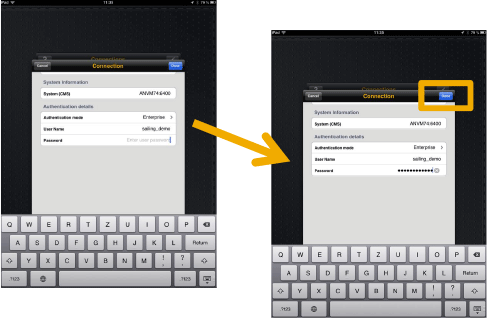
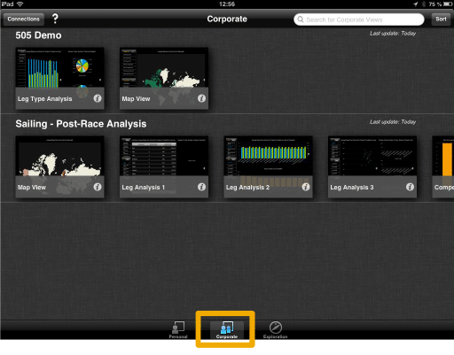
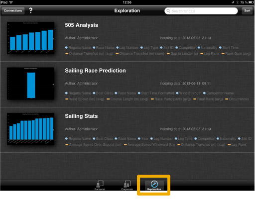

1. SAP BUSINESSOBJECTS EXPLORER (POST-RACE)
1.2. iPad
1.2.1. App Installation
Download App “SAP BusinessObjects Explorer” from the AppStore:
1. Open the app by tapping on the app icon:
2. The app will ask for an application password. This password is required by the app itself and can be defined by the user (e.g. “aaaaaaaa” or “sailing123”):

1.2.2.Automatic Connection Setup
1. Click the following URL on your iPad or scan the QR Code: Open in SBO Explorer
The SAP BusinessObjects Explorer App is opened and a connection called “Sailing” is added to the connection list automatically
2. Tap the newly added connection “Sailing” A popup appears, tap “Edit Connection”:

3. Go to field “Password” and enter sailing_demo, then tap “Done”:

4. Now tap the connection “Sailing” again
5. Exploration View Sets (button “Corporate”):
Predefined views on data
related to various events.

6. Information Spaces (button “Exploration”):
Complete set of data
related to various topics (e.g. boat classes)
